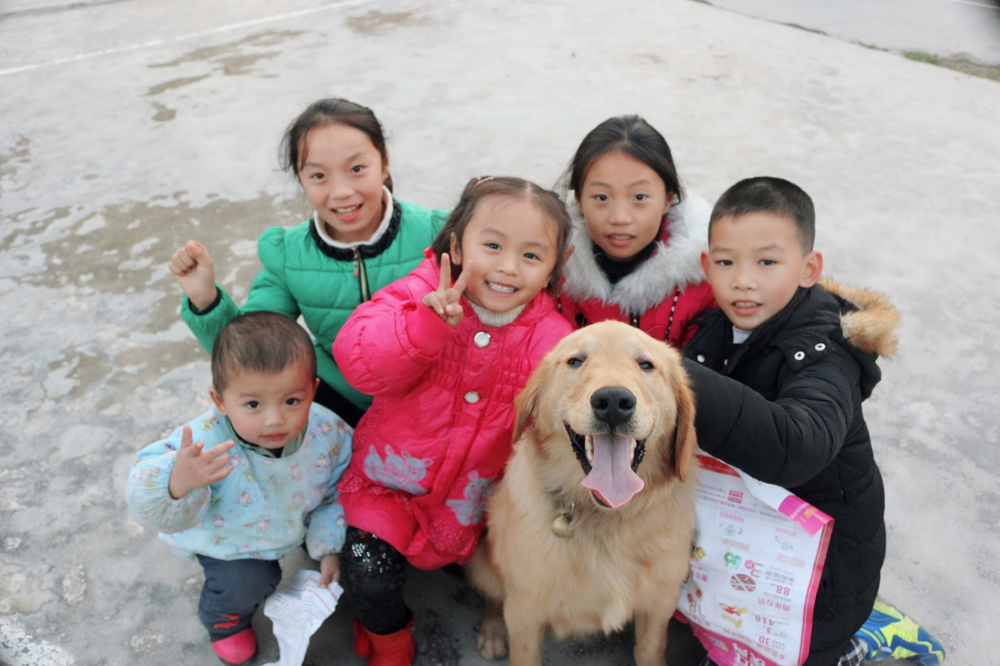
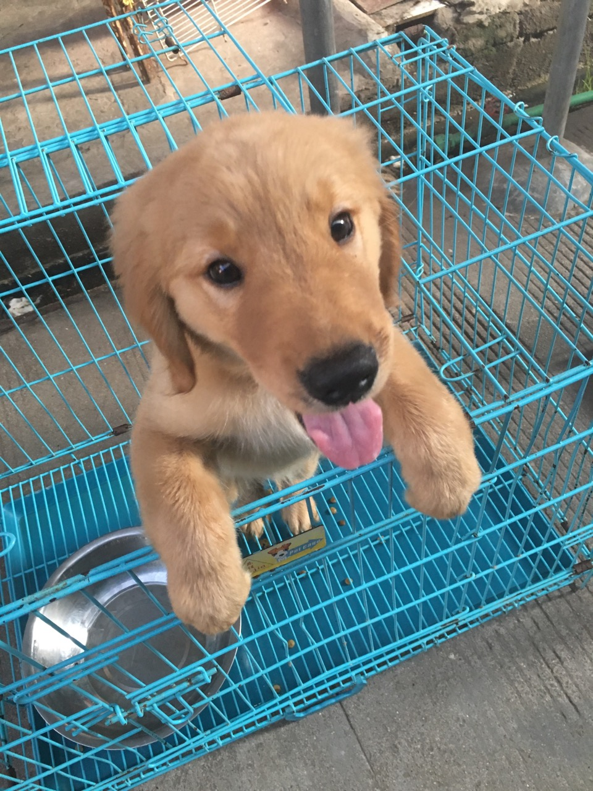
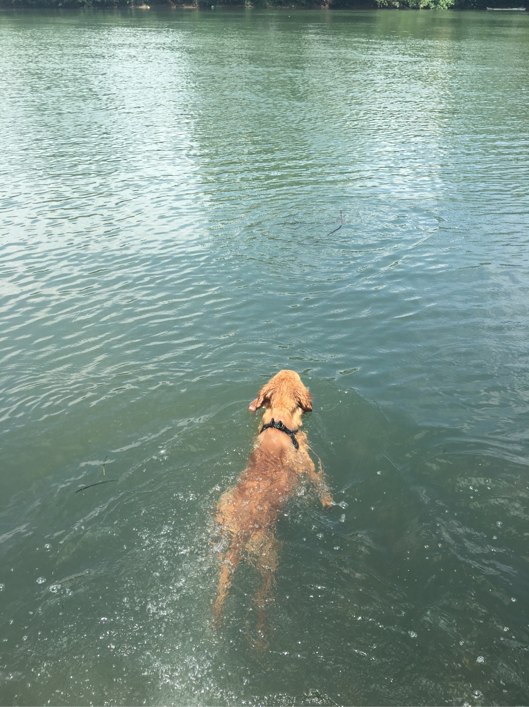
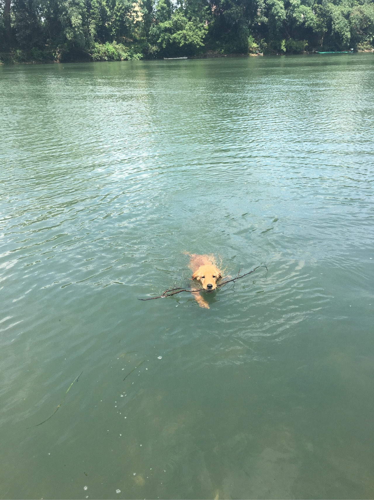
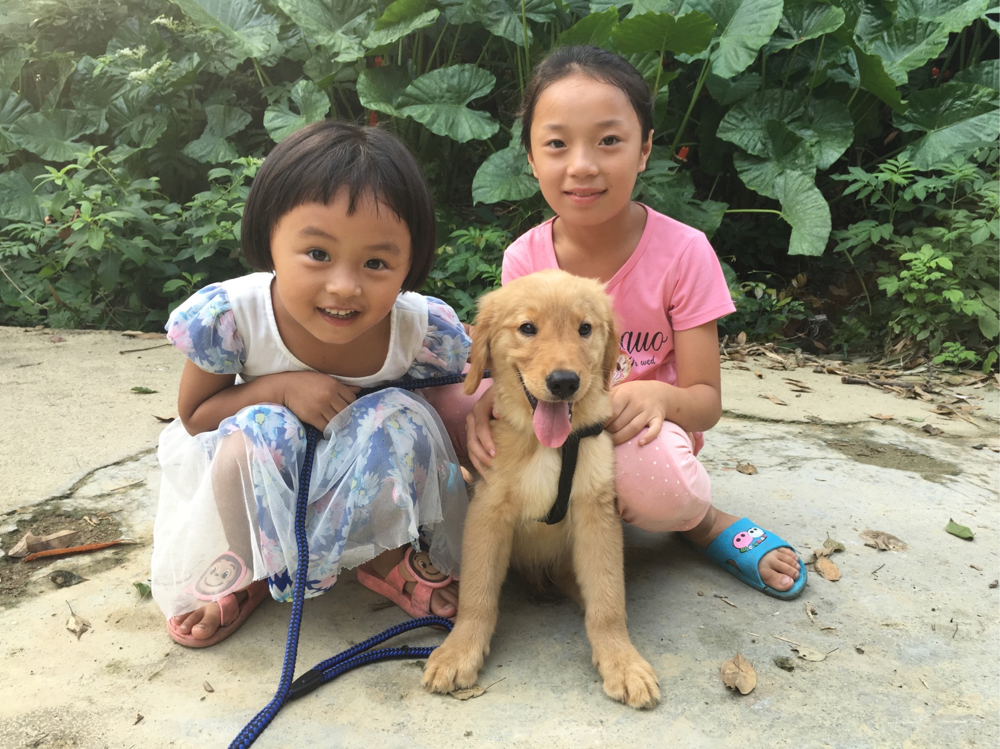
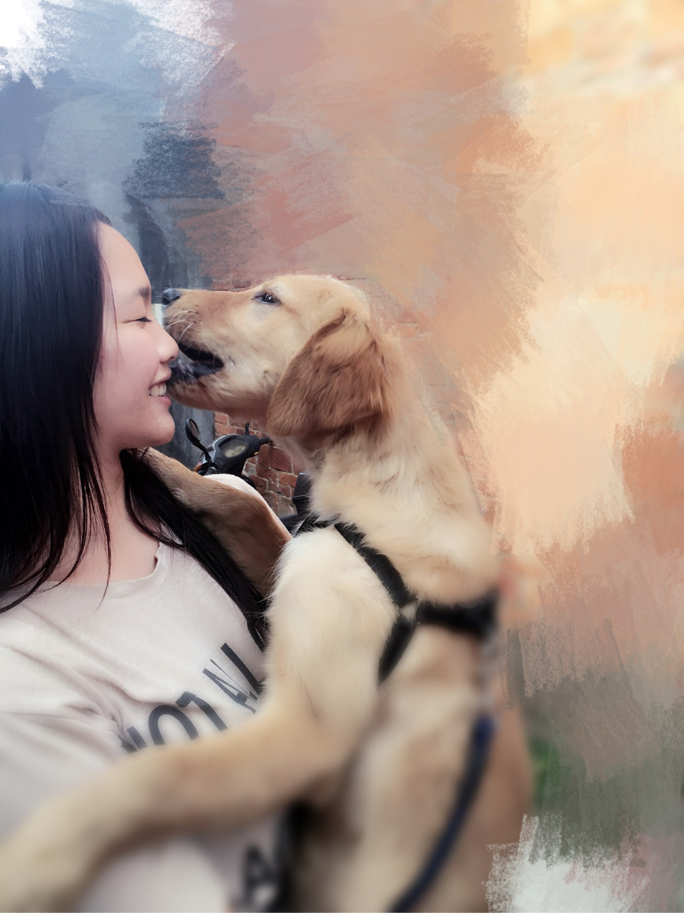
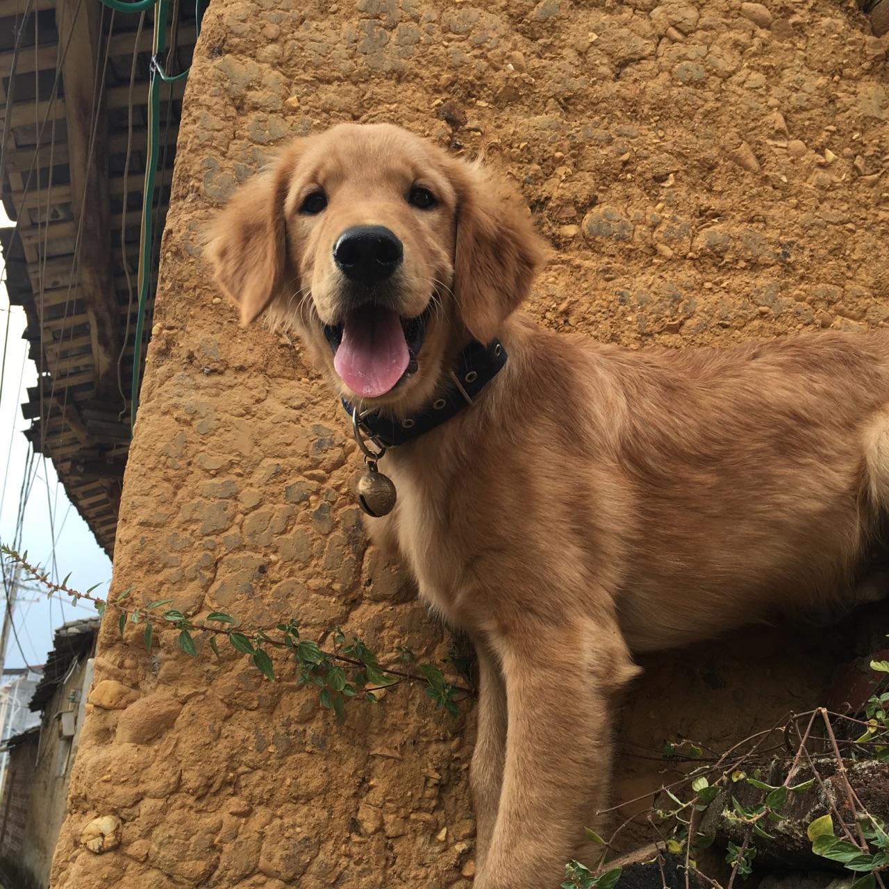
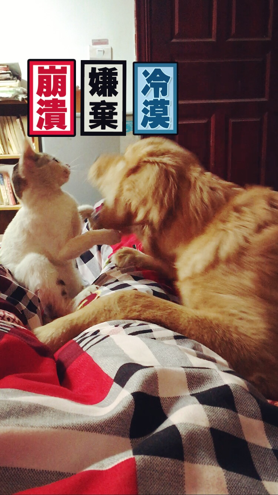
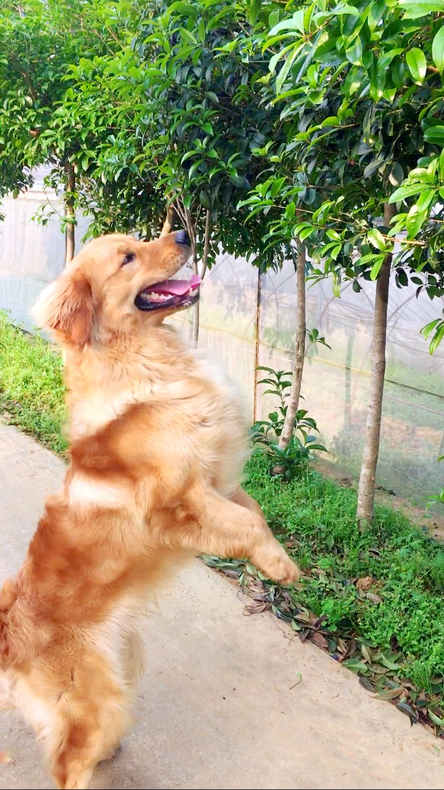

正文: 4月29日更新谢谢大家的点赞评论～
有人在评论里问了一些问题，我来回答一下～
寿司买的时候是2000元，我不太清楚金毛的价格，所以不知道贵了还是便宜了。
它半岁以前是在老家长大的，所以跟人很亲近。在村子里一般不牵绳，因为寿司跟大家都很熟悉，而且寿司对外人从小到大都不叫，对家里人撒娇的时候才会呜呜呜的发出一点声音，基本不会吵到人或者吓到人。
但是作为一个合格的铲屎官，如果出去玩还是会牵绳，毕竟一只75斤的金毛，体型还是会吓到很多人。
夏天驱虫已经做好了，狂犬疫苗一年一打，今天也去注射了。
在这里我想呼吁一下，大家不要看着金毛可爱一时冲动就去养了。
其实养一只金毛的成本不算很高，但是你需要花费很多的心思。你需要保证每天跟它互动的时间不能少于30分钟，出去溜它不能少于2小时。
我说过寿司是在老家长大，需要陪伴跟遛狗的时间比别人长。
所以我每天6点半起床，7点钟遛狗早上溜一个小时。小城市没有多大，上班中午2个小时休息的时间也会回去陪它玩一下。晚上带它8点出去，10点回来。
因为我妈妈坚持狗粮就是饲料，营养不均衡（ps：我平时买的狗粮是冠能）。
所以大多数时间都是妈妈做狗餐，什么牛肉，鸡胸肉，三文鱼……每天变着法子做，偶尔累了才喂狗粮，最后导致寿司体重严重超标，走两步就就喘，最近才减下来。
如果你准备养一只狗狗，请做好所有的心里准备。它小时候憋不住尿的时候，你每天可能要拖十几次地。它不知道拉屎要出去的时候，你要忍住臭烘烘的味道，把它的粑粑清理干净。你要忍受它不听你的指令肆意妄为，你要忍受它把你的家弄得天翻地覆……
最后，今天4月29日，寿司一岁啦～
希望寿司能够健康成长，永远都像这样快乐

——
——分割线——
以下为原答案
我觉得有种东西真的是看眼缘吧
去年7月我辞职了，做了一件一直想做的事情，养一只金毛。
然后就看到了这货，真是一脸的纯真无邪，当时它两个月。
我叫它寿司

问了价格，老板告诉我它爹品种好，它养的好的话可以养到80斤而且毛量厚吧啦吧啦
我也不知道它纯不纯，我也不会看它纯不纯，直接问：多少钱你说吧。
看着老板打了疫苗，就这样把它带回了家。
可是当天凌晨被屎熏醒后，我坐在床边看着他一脸天真无邪的样子之后，我觉得我被骗了。
辞职手续办完之后，就带着它回了老家。
每天在乡间策狗奔腾，一开始怕狗狗细小，狗瘟，真是小心翼翼。
可当时是夏天，它又非常怕热，见到老家的河跟疯了一样。我看着它渴望的眼神，就纵容它了。


寿司自带捡东西的技能，每天从河里捡到树枝无数，塑料瓶无数，垃圾袋无数。
每天泡在河里游泳，回家吹干就睡觉。可能是因为寿司半岁以前都是在老家长大，每天玩得不亦乐乎没有其他精神去搞破坏，所以从小到大他只啃坏过我的一只拖鞋，没有拆过家里任何东西。
所以深受家人喜爱，懂得撒娇，也懂得撒泼。会看人脸色，也会对你甩脸色。
最喜欢的就是小孩子，一见到小孩子就会屁颠屁颠过去谄媚讨好。（图为老家的侄女与堂妹）

而且永远不配合你拍照，只要你拿出相机就绝对拒绝。

4月29日寿司就1岁了，虽然它目前为止的技能只有坐下，握手。对比其他金毛转圈，后倒，跳舞等等，我家寿司真心算不上聪明。
但它永远是我家的大宝贝


